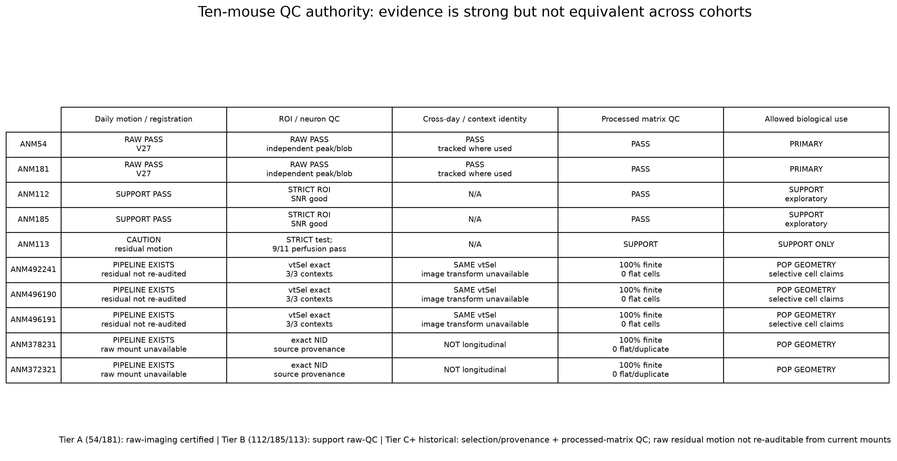
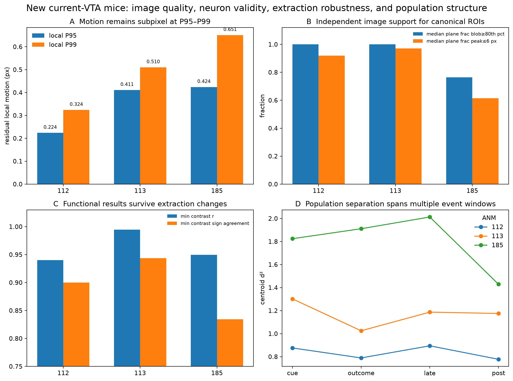
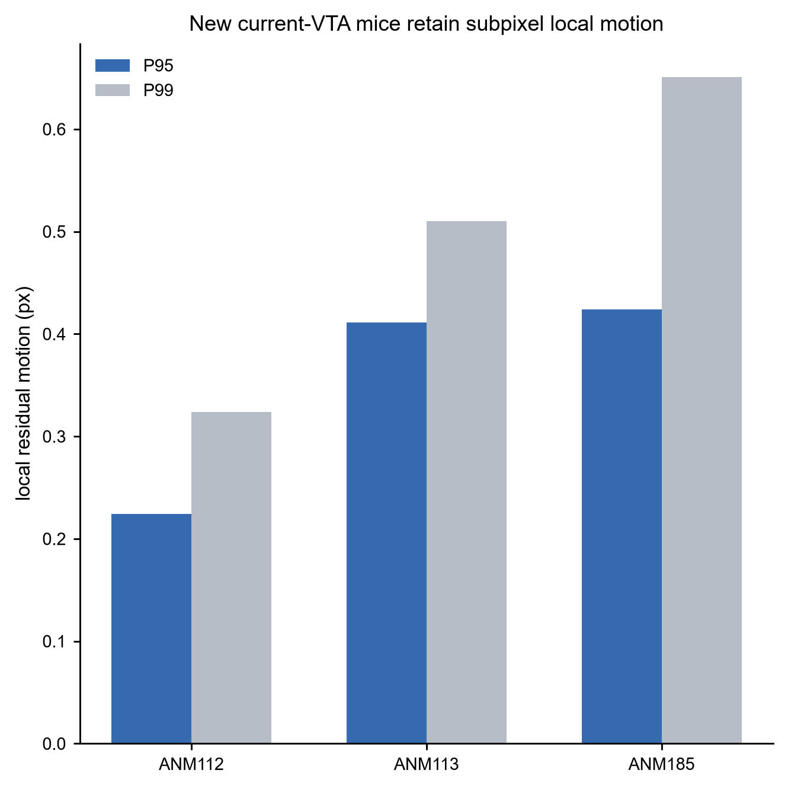
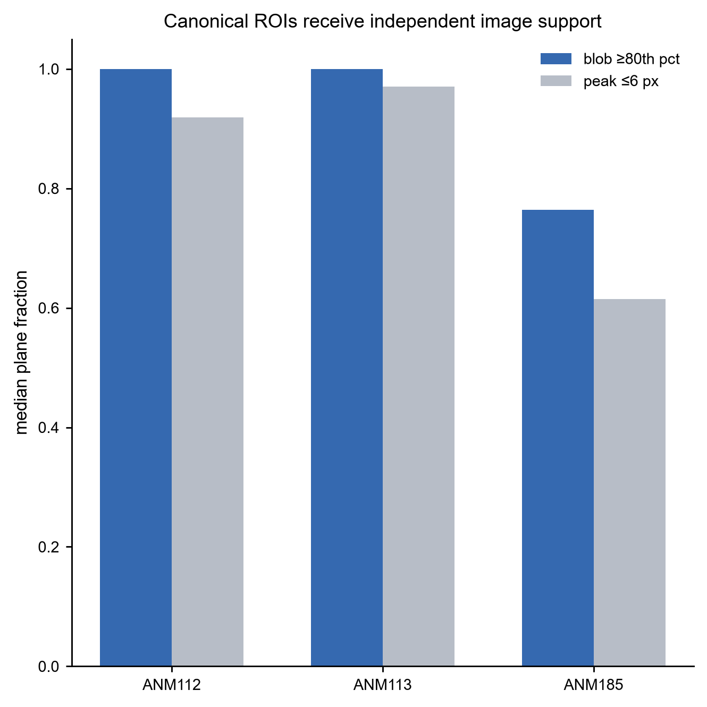
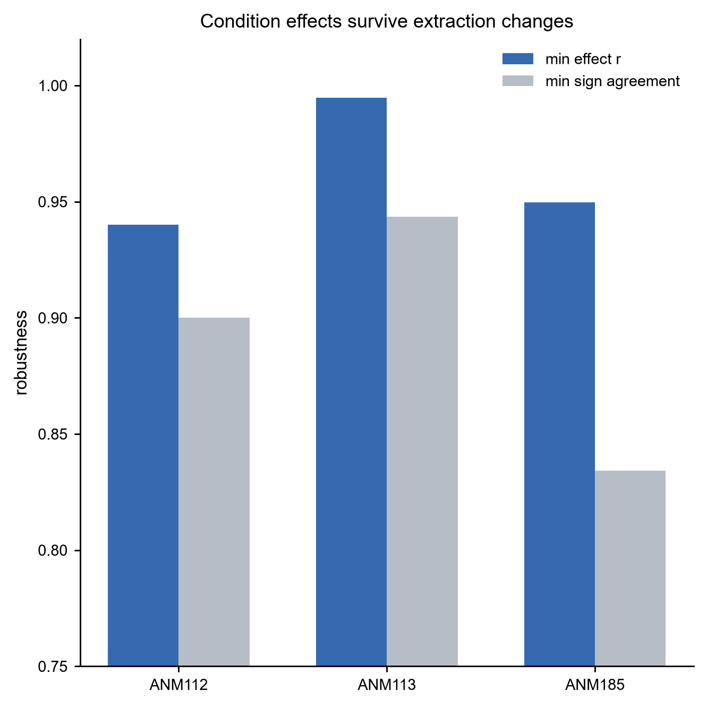
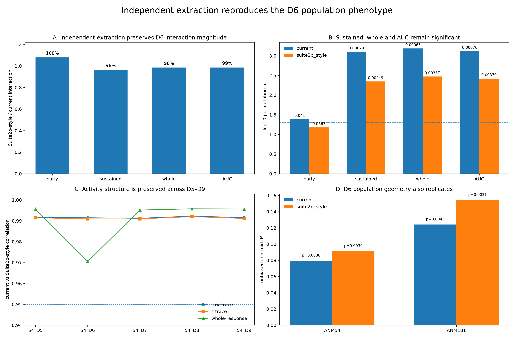

Quality evidence is strong, but raw-imaging auditability is not identical across cohorts.
Current VTA data can be audited at the image/ROI/extraction level; the historical cohorts retain strong selection, matrix, lineage and functional robustness evidence even though old raw movies are not currently mounted.

Ten-mouse QC authority: raw imaging, ROI validity, identity and processed-matrix scope.
Image quality and neuron validity are independent of trial count.

Motion, independent image support, extraction robustness and population geometry for ANM112/113/185.
New current-VTA image quality shown as separate square figures
Motion, independent image support and extraction robustness are no longer compressed into one multi-panel summary.

Residual local motion
P95 and P99 local residuals for ANM112/113/185.

Independent image support
Blob and peak-based image evidence for the canonical ROIs.

Extraction-method robustness
Condition-effect vectors and signs remain highly concordant under alternative background subtraction.
ANM54/181 primary D6 results survive an alternative extraction rule.

Independent Suite2p-style neuropil/background extraction preserves the sustained D6 interaction and D6 population geometry.